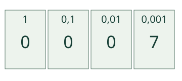
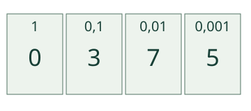

Aava tutkii sadasosaa. Jaa se vielä kymmeneen yhtä suureen osaan.
Miksi tuhannesosa?
Yksi kokonainen jaetaan 10 yhtä suureen kymmenesosaan. Kukin kymmenesosa jaetaan 10 sadasosaan. Kun kukin sadasosa jaetaan vielä 10 yhtä suureen osaan, kokonaisessa on 1000 pientä osaa. Yksi on 1/1000 = 0,001.
Kymmenen tuhannesosaa täyttää yhden sadasosan: 0,010 = 0,01. Sata tuhannesosaa täyttää kymmenesosan: 0,100 = 0,1. Tuhat täyttää kokonaisen: 1,000 = 1.
Esimerkki: 7 tuhannesosaa

Esimerkki: 375 tuhannesosaa

Nolla keskellä ja mittaustilanne
Metrissä on 1000 millimetriä. 48 mm on 48 tuhannesosaa metristä: 0,048 m. Kymmenesosia on 0, sadasosia 4, tuhannesosia 8. Se ei ole 0,48 m.
Kilogrammassa on 1000 grammaa. 45 g on 0,045 kg. Kerroin on tässä annettu; sinun ei tarvitse tunnistaa vaakaa tai mitata ruudulta.
Lisätutkimus ja paperinauha
Jaa paperinauha kymmeneen yhtä suureen osaan. Valitse yksi osa ja piirrä siitä suurennos, jossa on kymmenen osaa. Suurenna taas yksi näistä kymmeneen. Kirjoita jokaisen kuvan viereen, minkä osan alkuperäisestä se esittää. Miksi suurin piirros voi esittää pienintä osaa?
Lopuksi: miksi 0,005 ja 0,05 eivät ole sama määrä? Montako tuhannesosaa on yhdessä sadasosassa?
Opettajalle: yksikkö ja rajat
Luokat 3–6. Pakollinen M-DEC-02. Sama alkuperäinen nauha on aina vertailukokonainen. Suurennosten näyttöpituuksia ei verrata fyysisinä samanpituisina nauhoina: kuvat esittävät 1, 1/10 ja 1/100 kokonaisesta. Alimman sadasosan 10 yhtä suurta osaa ovat kukin 1/1000 alkuperäisestä. Viivat/korostus eivät kasvata osaa.
Kirjoitustehtävä pyytää paikkojen numerot sekä saman määrän desimaalilukuna. Tavallinen yksi numero per paikka erotetaan samanarvoisista desimaalimerkinnöistä: esim. 10 tuhannesosaa on totta, mutta paikkasarakkeeseen kirjoitetaan silloin 1 sadasosien kohdalle ja 0 tuhannesosien kohdalle. Samanarvoiset loppunollat/pilkku/piste hyväksytään. Tuetut tehtävät 0–1, luvut esitetään täsmällisinä kokonaisina tuhannesosina. Ei pyöristyksen tai tuhannesosaa pienemmän erisuuruisen arvon harjoittelua.
Mittausesimerkeissä 1 m = 1000 mm ja 1 kg = 1000 g annetaan näkyvästi. Ruudun käyttö ei osoita fyysistä mittaamista, kaikkien yksikkömuunnosten hallintaa tai itsenäistä osaamista. Malli ja vihje ovat tukea. Paikallinen palaute ei ole formaali hallintatila, pysyvyys-/muistamis-/vaikuttavuustodiste tai oppilashistoria. Aikuinen voi lukea ohjeet.